Hello Ionic
Created by OhSeKwang Mostisoft. Alt + click anywhere to zoom back out.
모바일 앱의 종류.
- 네이티브 앱
- 모바일 웹 (웹앱)
- 하이브리드 앱
네이티브 앱
스마트폰에 설치하여 사용하는 앱
- 모바일에 최적화된 언어를 사용하여 개발
- 앱스토어, 마켓에서 앱을 다운받아 스마트폰에 설치
- 스마트폰 모든 기능 활용 가능
- 스마트폰 에서 제공하는 서비스를 직접 호출하여 실행하므로 실행속도가 매우 빠르고 안정적
- 특정 플랫폼에서만 동작하여 앱스토어를 통해 업데이트가 가능하기 때문에 업데이트가 느림
- 해당 운영체체나 플랫폼이 다르면 많은 시간과 비용을 감수하여 새롭게 개발
- 모바일에 최적화된 언어를 사용하여 개발
- 앱스토어, 마켓에서 앱을 다운받아 스마트폰에 설치
- 스마트폰 모든 기능 활용 가능
- 스마트폰 에서 제공하는 서비스를 직접 호출하여 실행하므로 실행속도가 매우 빠르고 안정적
- 특정 플랫폼에서만 동작하여 앱스토어를 통해 업데이트가 가능하기 때문에 업데이트가 느림
- 해당 운영체체나 플랫폼이 다르면 많은 시간과 비용을 감수하여 새롭게 개발
모바일 웹 (웹앱)
스마트폰 브라우저를 통해 사용
- 데스크 탑 브라우저에서 보는 웹 페이지를 스마트폰 화면 크기로 축소시킨 것
- HTML, CSS, Javascript, JSP, PHP, ASP, ASP NET등 일반적이고 표준화된 웹 기술로 개발
- 풀 브라우징 방식으로 페이지를 이동해 앱에 비해 접속속도가 느림
- 모바일 기기의 특성상 이동 중에 서버 접속 장애가 발생할 수 있어 불안정
- 애플 앱스토어, 안드로이드 마켓에서 등록, 판매 불가능
- 스마트폰의 고유정보 및 하드웨어를 제어 불가능
하이브리드 앱
네이티브앱과 모바일 웹의 장점을 결합한 형태
- 웹앱을 네이티브 앱으로 포장한 것
- 웹 기술로 개발되었지만 모바일에 최적화된 언어로 만드는 네이티브 앱처럼 보이게 하는 것
- 네이티브앱의 형태이므로 앱스토어나 마켓에 등록 가능
- 모바일의 고유정보를 이용하고 하드웨어 제어 가능
- 외부 형태는 네이티브 앱이지만 실제 내부는 모바일 웹앱으로 실행
- 별도의 하이브리드 앱 프레임워크 필요
- 폰갭(PhoneGap), 앱스프레소(Appspresso), 티타니움(Titanium)
앱 비교
| 네이티브 앱 | 모바일 웹 (웹앱) | 하이브리드 앱 | |
|---|---|---|---|
| 단말기 설치 | 가능 | 브라우저 이용 | 가능 |
| 앱스토어 판매 | 가능 | 불가능 | 가능 |
| 업데이트 | 불편 | 쉬움 | 불편 |
| 단말기 기능 사용 | 모두 가능 | 사용 불가 | 가능 |
| 반응속도 | 가장빠름 | 빠름 | 약간느림 |
| 개발 환경 | 각 스마트폰 | 표준 | 표준 |
하이브리드 앱
적합한 분야
- B2B 및 B2E 앱
- 내부 회사 서비스 및 리소스
- 여러 플랫폼에 네이티브 앱을 배포하고자 하는 기업
- B2B 및 B2E 앱
- 내부 회사 서비스 및 리소스
- 여러 플랫폼에 네이티브 앱을 배포하고자 하는 기업
하이브리드 앱
장점
- 웹 표준을 사용하여 제작(API를 통해 폰 기능에 접근하기 위한 약간의 특수한 코딩이 필요)
- 기업은 기존 웹 개발자를 활용하여 하이브리드 앱 개발 가능
- 신속한 수정 가능
- 각 플랫폼에서 네이티브 앱으로 실행
- 아이디어가 생기는 즉시 빠르게 개발
- 저렴한 비용으로 도입
- 웹 표준을 사용하여 제작(API를 통해 폰 기능에 접근하기 위한 약간의 특수한 코딩이 필요)
- 기업은 기존 웹 개발자를 활용하여 하이브리드 앱 개발 가능
- 신속한 수정 가능
- 각 플랫폼에서 네이티브 앱으로 실행
- 아이디어가 생기는 즉시 빠르게 개발
- 저렴한 비용으로 도입
하이브리드 앱
단점
Why? Ionic
- 모바일 앱을 개발하기에 최적화된 UI가 기본적으로 제공
- HTML으로 UI를 만들고 JavaScript의 데이타 업데이트를 빠르게 적용
- MVC 개발을 할 수 있는 환경을 제공
- 네이티브 자원을 사용할 수 있는 plugins 사용
- 크로스 플랫폼 빌드를 제공
- Node.js 기반으로 개발
- 활발한 개발자 포럼을 지원
Ionic Start
사전지식


AngularJS
소개
AngularJS는 구글(Google)에서 만든 Single Page App(SPA)를 만들 때 반복되는 코드와 복잡한 코드를 줄 이고 테스트를 쉽게 하도록 하기위해 만든 JavaScript MVC Framework
AngularJS
구조


AngularJS 세미나 자료
동영상jQuery 버전
Angular JS
Angular JS
ng 선언 Html
Angular JS
Angular module controller 선언
var myApp = angular.module('myApp', []);
myApp.controller('MainCtrl', ['$scope', function ($scope) {
// Controller magic
}]);
Angular JS
Hybrid Ionic Start
Ionic 환경설정
NodeJS 설치
https://nodejs.org/en/ 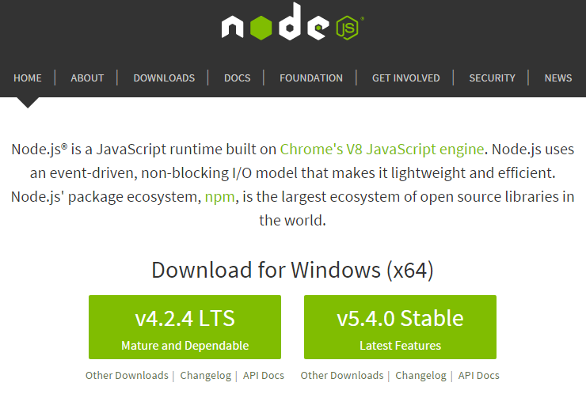Ionic 환경설정
Cordova 설치
Ionic 환경설정
Ionic 설치
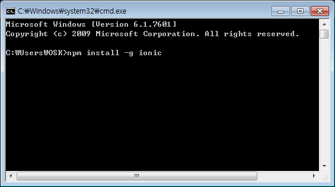Ionic 환경설정
Platform 설치
cd work //작업폴더 이동
ionic platform add ios //아이폰 설정(맥환경 및 XCode 필요)
ionic platform add android //안드로이드 설정 (안드로이드 SDK 다운 및 설정 필요)
Ionic 템플릿
blank
cd..
ionic start blankApp blak //실행명령:폴더명:ionic템플릿설정
cd blankApp //폴더이동
ionic Serve //내장Ionic 서버 실행
Ionic 템플릿
blank
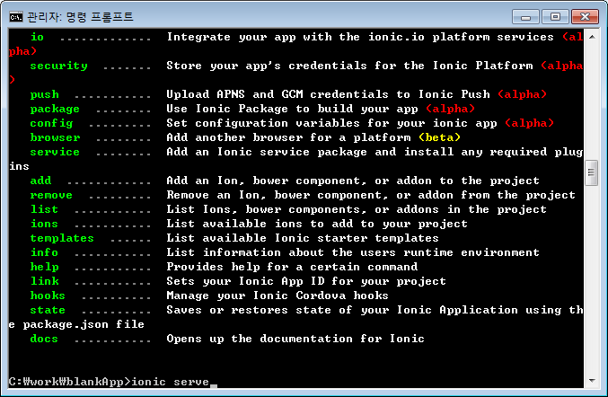 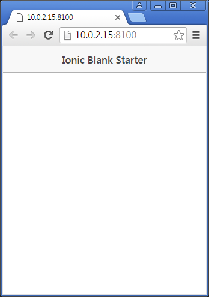Ionic 템플릿
sidemenu
cd..
ionic start sidemenuApp sidemenu //실행명령:폴더명:ionic템플릿설정
cd sidemenuApp //폴더이동
ionic Serve //내장Ionic 서버 실행
Ionic 템플릿
sidemenu
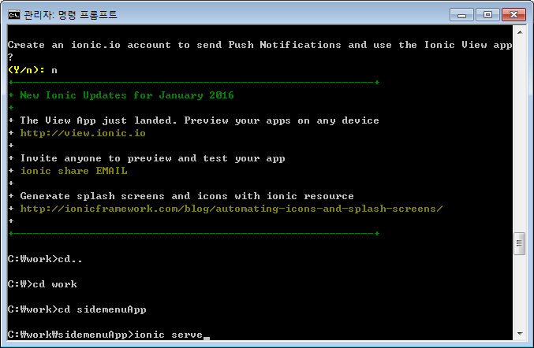 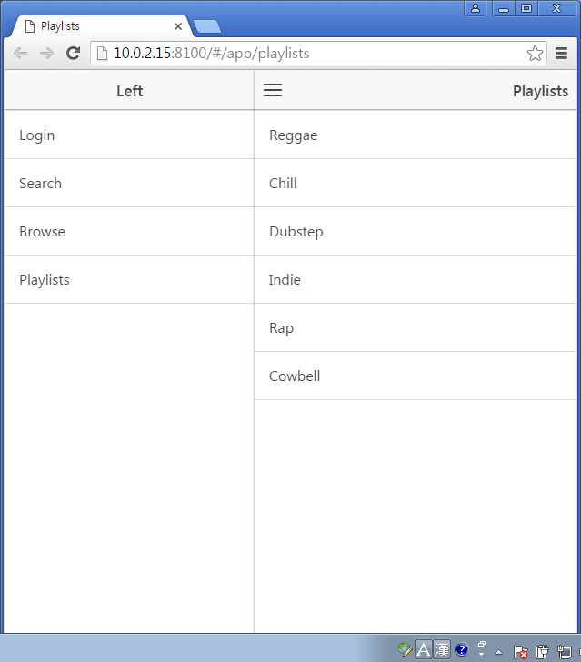Ionic 템플릿
tabs
cd..
ionic start tabsApp tabs //실행명령:폴더명:ionic템플릿설정
cd tabs //폴더이동
ionic Serve //내장Ionic 서버 실행
Ionic 템플릿
tabs
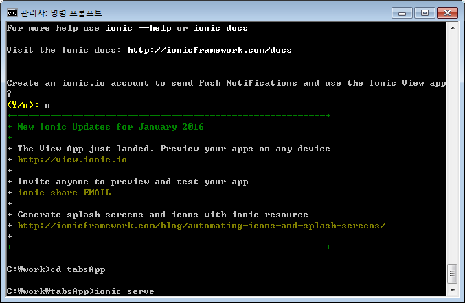 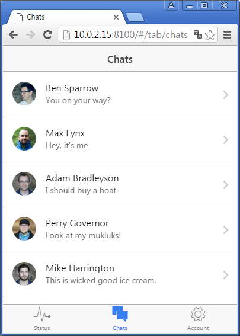Example Ionic
Example Ionic
js/app.js 코드 추가
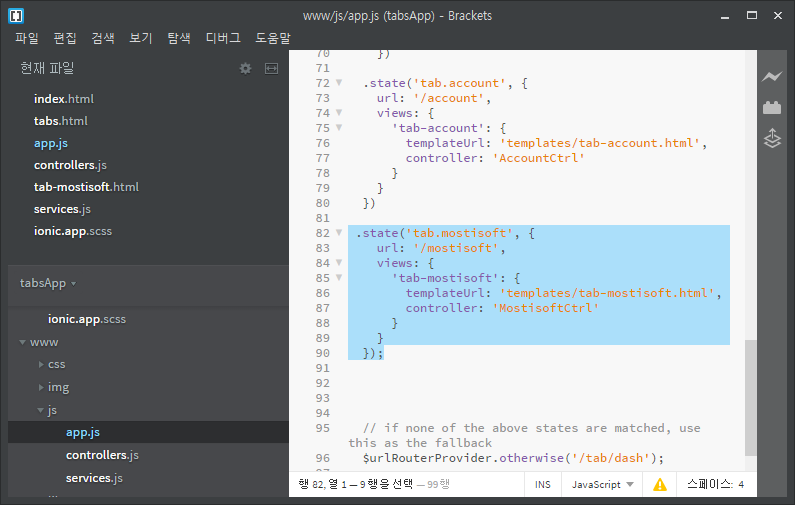Example Ionic
js/controllers.js 코드 추가
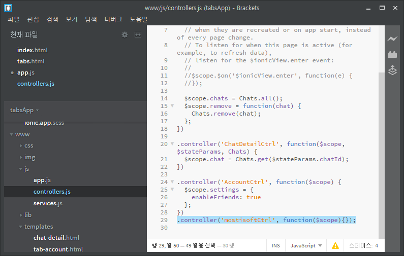Example Ionic
www/templates html 추가
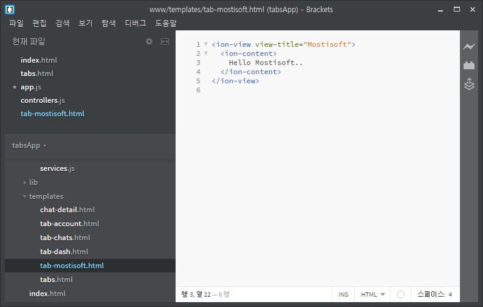Example Ionic
www/templates/tabs.html 추가
Example Ionic
실행화면
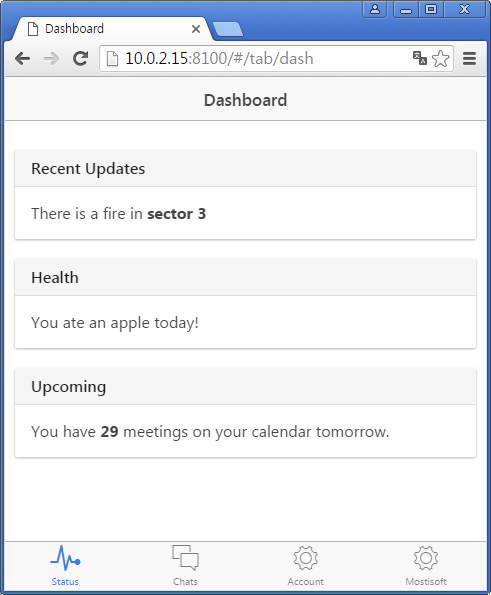 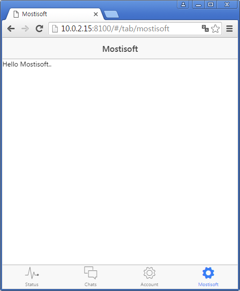